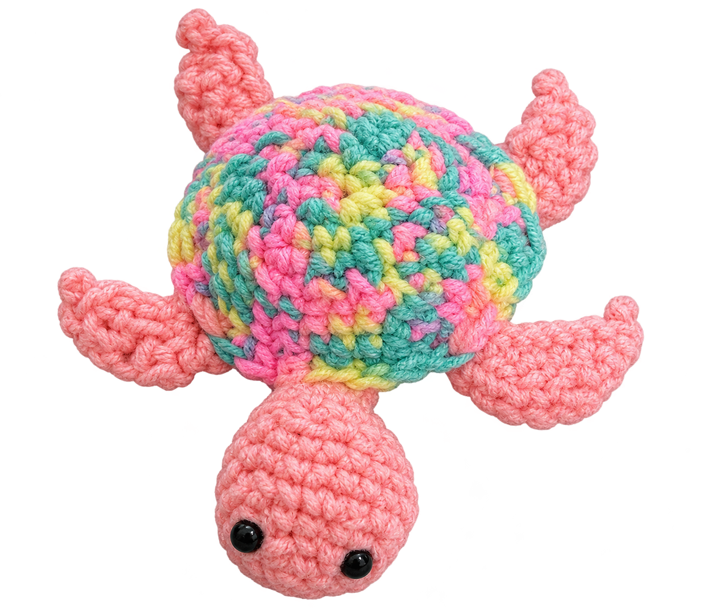
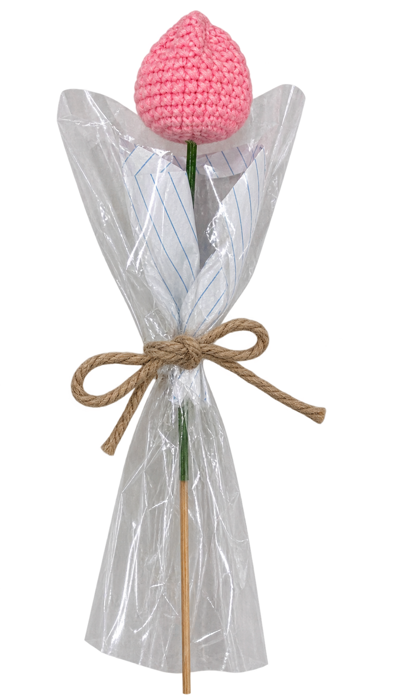
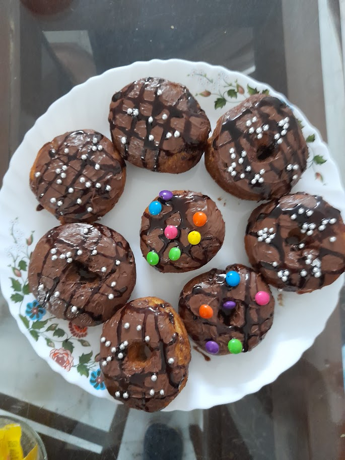
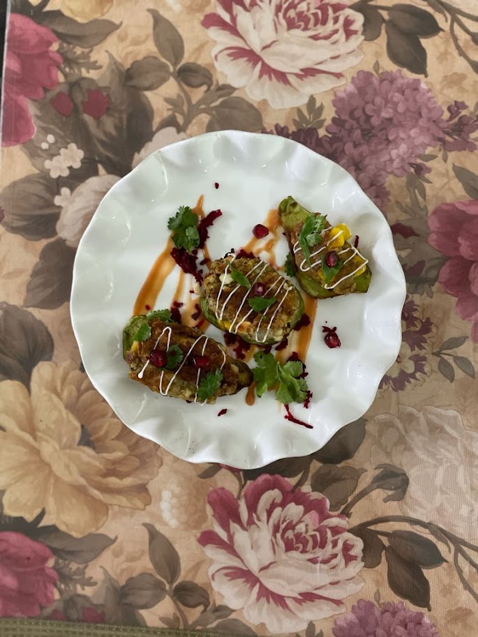
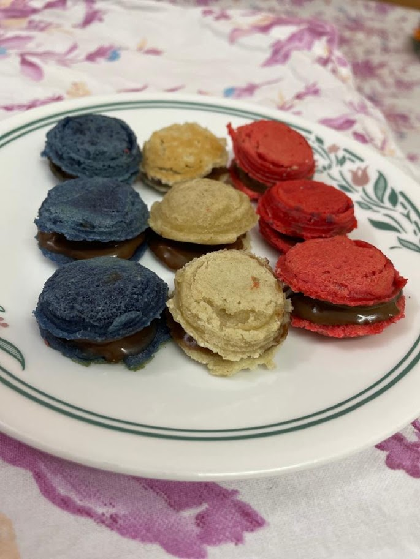

Center for Health Research · Cal Poly
Graphics & App Designer
Designing accessible health apps, visuals, icons, videos, and print materials that make research information easier to understand.
About me
I’m Ishika, a multidisciplinary designer working across digital experiences, visual communication, and the small details that make a design feel human.
What I’m doing now
Center for Health Research · Cal Poly
Designing accessible health apps, visuals, icons, videos, and print materials that make research information easier to understand.
Hack4Impact Cal Poly
Coordinating designers, social content, recruitment, and operations for nonprofit technology projects.
Hack4Impact Cal Poly · We Are Atascadero Pride
Leading user and stakeholder research for the nonprofit's website redesign focused on accessibility and community needs.
CodeBox
Leading UX for an AI-powered student study tool through research, Figma design, prototyping, and developer collaboration.
Why me?
I bring hands-on experience across UX, app, and graphic design, along with foundational coding skills in HTML, Python, Java, MySQL, and GitHub. That mix helps me think beyond the screen and design with both the experience and its implementation in mind.
I’m adaptable and enjoy making sense of new problems. Because design tools and workflows change quickly, I’m comfortable learning as I go—many of my strongest projects began with a tool, system, or subject area I had to figure out while building.
I ask questions, translate ambiguous feedback into clear choices, and stay close to the details until a design feels both usable and polished. Most importantly, I pair visual craft with an audience-first mindset so the work is clear, useful, and easy to return to.
How I work with AI
I use AI to explore, synthesize, prototype, and automate repetitive steps—not to produce generic work that loses the reason it was designed in the first place. Every direction still needs a human perspective: understanding the audience, questioning the output, and deciding what belongs in the final experience.
My process is less a rigid double diamond and more of a human-led AI feedback loop. AI helps me move through possibilities faster, but I make the ultimate decisions: what to keep, what to refine, and what genuinely solves the problem.
When I design systems that include agentic AI, I create rules that both people and agents can rely on: what an agent can do, what it should never change, what must remain hidden, and when control needs to return to a person. I automate deliberately—when it removes repetitive work instead of creating more oversight—and keep prompts concise, purposeful, and token-aware.
Beyond the screen
Crocheting is where my portfolio theme began. It definitely tested my patience at first, but after 24 hours, I finished my first baby turtle. I love turtles, and I’m now crocheting a whole family of them.


I love testing and creating new recipes. In high school, I invented a dish called Avocado Krispies and was the first runner-up in my district. A fun fact: I can recreate a dish with almost 90% accuracy just by tasting it.


